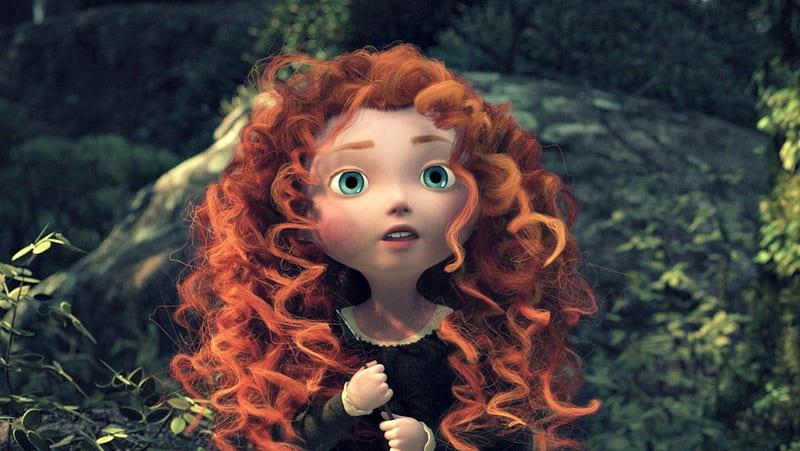

“There are those who say fate is something beyond our command. That destiny is not our own. But I know better. Our fate lives within us. You only have to be brave enough to see it.”
-Merida
Princess Merida is a Scottish princess from the kingdom of DunBroch, the daughter of
Queen Elinor and King Fergus, and
the older sister
of Harris, Hubert, and Hamish. Headstrong and intrepid, Merida challenged her kingdom's longstanding
traditions to live
a life of independence.
Merida is a very bold, brave, daring, courageous, stubborn, rebellious, and
headstrong girl who does not fit the
stereotypical princess role.
Rather than being a damsel in distress who is subservient to the
customs,
traditions, and
social restrictions her society places on her and expects her to follow, Merida openly rebels and defies
her heritage as
a princess and would like for nothing more than to be a normal girl.
She is very athletic and enjoys
nothing more than
riding her horse Angus and practicing her archery, of which she is the best in the kingdom. She also
seems to be skilled
in sword fighting, as shown in the Brave featurette "Cutting the Class".